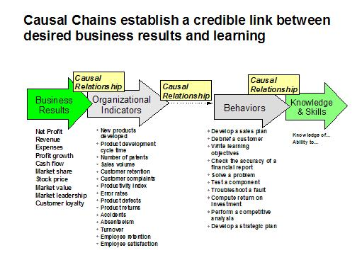

| Artifact: Causal Chain
(ORG 403)
|
|
 |
| The work product contains diagrams that can be used to trace the impact of learning (or any other intervention) through a “chain” of causal factors. |
Domains: Learning
Work Product Kinds: Assessment |
|
Purpose
The purpose of the Causal Chain work product is to maximize the impact of education and training by:
-
Identifying the linkages between skills/knowledge (learning) and business results
-
Clarifying and verifying the need for education and training
-
Identifying the factors that can enable or inhibit the achievement of business results from education and training,
so that the intervention can be designed for maximum effectiveness
-
Identifying business-related indicators that can be turned into measures to track throughout the Learning
Effectiveness Measurement process
Most education and training doesn’t achieve business results because it wasn’t designed to achieve them. If the
organization is only aiming at a learning target, they are less likely to impact a business target. Developing Causal
Chains will help the organization target the right results with an intervention that is capable of achieving them.
It is very unusual for learning to be linked with business results. Too often presumed “business needs” and the
proposed learning interventions are disconnected. Furthermore, learning requirements are rarely linked with a business
need by more than intuitive judgment, and the learning aspects of the need are rarely understood. Under such
circumstances it is not surprising that learning measurement can find no business impact!
To bridge this gap, a systematic process is used to trace the “chain of causality” between learning and business
results. In order to achieve business results through learning interventions, it is crucial to understand the causal
relationships, even if the understanding is initially incomplete.

The diagram above shows the basic process of linking learning interventions with business results. Starting with
desired business results, we can link to organizational indicators (key business measures), and then to
new and different behaviors that are critical for impacting those indicators. It is vital to focus on the
“critical few” behaviors, rather than the “trivial many.” Finally, the knowledge & skills necessary for
enabling the behaviors can be determined. Furthermore too many learning activities cover behaviors and skills that are
already possessed by the target audience. This is why it is important to pretest to gain an understanding of skill
levels.
Causal Chains provide a wealth of other, collateral benefits, such as the enormous amount of client organization
knowledge collected that can be leveraged into other training and performance improvement engagement work and provide a
large number of “starburst” opportunities. Causal Chains are also valuable for problem solving, strategic planning, and
“contextualizing” learning scenarios, so that skills will be taught in the most organizationally relevant
context.
|
Description
| Main Description |
A Causal Chain is a predictive measurement tool. Predictive measurement is measurement that is used at the front-end of
learning and other performance improvement projects to select and design interventions that will have significant
business impact, as opposed to measurement that is used later in the development cycle. Causal Chains can be used to
plan for potential impact or to document the impact that has already occurred. One thing is certain: A learning
intervention is unlikely to ever have an organizational impact if it doesn’t address critical links in a causal
chain.
Causal chains yield extremely valuable insights into the causes and effects that link interventions with business
results. Causal chains graphically depict the "chain of causality" that links factors between the desired results and
skills, performance problems, and interventions.
The chain of causality is based on an understanding of the "business logic" through which various factors in a causal
chain linked. Business logic describes how results are achieved in particular area of the business being analyzed. The
concept of business logic is not as difficult to understand as one might think -- even though most people in the
"learning business" are often intimidated by what happens in the "real business" of the organization. A simple example
of business logic is the fact that profit is composed of revenue minus expenses. Profit increases when revenue
increases and/or expenses are reduced. See example of a Causal Chain at the end of the Notation section of this work
product description.
|
| Brief Outline |
To develop causal chains, a five-tier template is used consisting of the following categories:
-
Business Results
-
Organization Performance Indicators
-
Individual/Team Performance Indicators
-
Behaviours
-
Knowledge/Skills
|
Illustrations
Key Considerations
The following advice and guidelines will help you ensure the greatest success in using the Developing the Causal
Chain work product:
-
Focus Causal Chain development efforts on learning and performance improvement opportunities that complement
strategic organizational initiatives. Multifaceted learning interventions are most likely to achieve significant
business results.
-
It is often helpful to develop causal chains by brainstorming indicators, one tier at the time, starting with
business results.
-
When developing Causal Chains in a face-to-face workshop setting, it is often useful to use Post-It Notes. These
Post-It Notes can be posted on the wall or on flip chart pages. It is often useful to tape up flip chart pages on
the wall before applying the Post-It Notes; this way, the completed draft Causal Chain can be removed for
subsequent documentation.
-
When developing Causal Chain by conference call, it is important to use an iterative approach, sending drafts of
the Causal Chain to participants after each call.
-
If the Causal Chain development is done remotely, electronic meeting programs can also be used to facilitate Causal
Chain development and review with subject matter experts and stakeholders.
-
Causal Chain diagrams can be developed using a variety of software applications, including Freelance, PowerPoint,
or software specifically intended to diagramming. However, it is important to ensure that all those who will want
to edit the diagrams have the appropriate software available to them.
-
Constantly align and realign your work with the organization’s business strategy. Use the Developing the Causal
Chain work product for strategic training that deserves such a methodology.
-
Create appropriate expectations for Causal Chains. Causal Chain development represents a valuable tool for
increasing learning effectiveness and for enhancing the effectiveness of other performance improvement
interventions. However, Causal Chains will not improve learning or performance unless they are used for that
purpose. Too often Causal Chains are developed without adequate commitment to taking appropriate action.
-
The major factors discouraging efforts to link training with business results has been the perceived need to
isolate the effects of training from other causal influences. In rigorous research this might be warranted.
However, the Developing the Causal Chain work product is based on an assumption of “contributory causality,” that
no business function is solely responsible for any business result. Results are achieved by various functions
working synergistically together. In an applied business context, no business function should be required to
rigorously isolate its impact from other potential contributors; neither should training. However, if isolating
effects is desired, considerable insight into the relative contributions of various influences can be gained by
through trend analysis, control, or soliciting expert input [See Phillips, 2000].
|
Tailoring
| Impact of not having |
Without the Causal Chain work product:
-
Education and training is likely to continue to be measured primarily at Level 1 (reaction) and Level 2 (learning),
if at all. [See Kirkpatrick, 1998]
-
Education and training will not have a clear linkage with business results
-
Education and training will continue to be a desirable, but non-critical, business function that will be an early
candidate for budget reduction when inevitable business downturns occur
-
e-learning will continue to be evaluated based on delivery cost reductions alone, and not based on business
benefits
-
Education and training will have far less impact on client organizations than it could have
-
Education and training will continue to be viewed out of context, and will be much more difficult to related to
other organizational performance improvement interventions
|
| Reasons for not needing |
This work product will be of limited value, and should probably not be used, under the following circumstances:
-
When the client not interested in linking learning, or other interventions, with business results
-
When the client organization views education and training as a cost of doing business, rather than a strategic
organizational function
-
When the focus education or training is not viewed as strategic
-
When there is no commitment to take action based on the Causal Chain
-
When the client is "terminally skeptical" about the ability to measure the results of training
-
When there is little commitment to measurement in the organization
|
More Information
| Checklists |
|
| Guidelines |
|
| Supporting Materials |
|
| Estimation Considerations |
|
© Copyright IBM Corp. 1987, 2012 All Rights Reserved
Property of IBM
These materials are intended only for use as part of an IBM engagement |
|